01 — Hero
Field-first identity
The launch screen sets the tone — a green pitch with the shield resting on it, signalling "sports" before a single screen loads.
A cross-platform sports product covering live matches, schedule, expert picks, news, short video and community matchmaking — designed from a single, scalable design system.
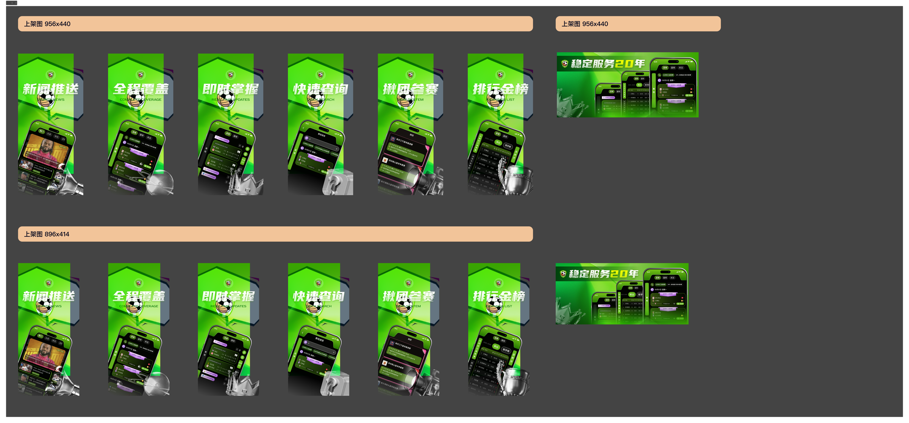
The match never stops — the product shouldn't get in the way of it.
Sports fans live in two states: scanning (what's on, who's winning, what to bet) and watching (live, chatting, reacting). Qi Sports is built so the jump between those two modes is instant — one tap, one rhythm, one visual language.
The China sports market is fragmented: live scores in one app, streams in another, expert picks behind paywalls, community on social. Fans hop between five tabs to follow a single match.
Audit and competitor research surfaced the opportunity: a super-app that brings the entire match-day journey — schedule, stream, stats, chat, expert insight and community — into one tab structure, with a visual identity bold enough to stand out in a crowded category.
Existing sports apps optimise for one need at a time — and force users to break the match-day flow to satisfy the others. Live streaming UIs were heavy, schedule grids were dense, and community/expert content felt grafted on.
Qi Sports unifies the match-day journey into one product — anchored by a confident green identity, a single component system, and a live-streaming experience designed for one-handed, in-the-moment use.
The palette anchors on a pitch green — the universal colour of the playing field, instantly readable as "sports". A vivid magenta carries energy and the entertainment-streaming side of the product, while a deep ink ground keeps stadium intensity behind the content.
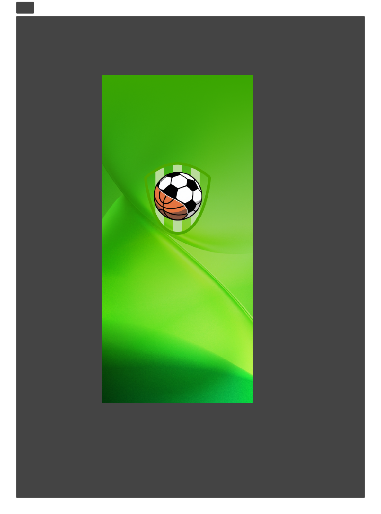
Two emotional poles — the calm of the pitch, the heat of the broadcast — held together by a confident dark ground.
Rounded pill components, soft elevated cards and gradient feature surfaces give the product a friendly, premium feel. Live moments use saturated colour and motion; reading moments use calm neutrals — same system, different volume.
A complete icon family (basic, match, mine, expert, sport, sign-in, PC, data, short-video, chat-room) plus a multi-state tabbar — every component specified for active, default, badge and notification states so engineers ship pixel-accurate UI.
A shield holding a football and a basketball — the two pillars of the platform — set against a vertical green field gradient. Built into a sizing system from app icon down to favicon, the mark stays legible at any scale without losing its sports DNA.
The launch screen sets the tone — a green pitch with the shield resting on it, signalling "sports" before a single screen loads.
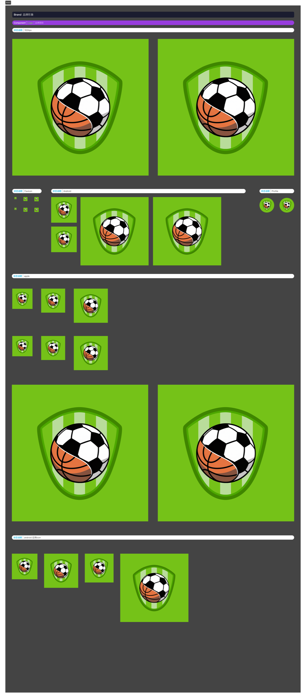
A full sizing system — from app icon to favicon — keeps the shield, ball geometry and proportions intact at any scale.
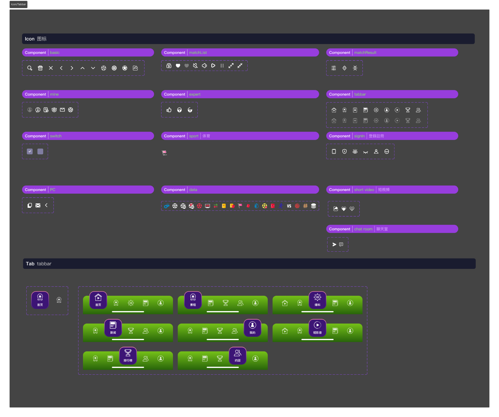
Twelve icon groups plus a multi-state tabbar — built for one consistent visual rhythm across the super-app.
The atmosphere of a stadium: the floodlit pitch, the buzz of the broadcast, fans toggling between watching and reacting in real time.
Audited Chinese sports apps and live-streaming platforms; mapped the gap between fragmented single-purpose tools and a unified match-day journey.
A fan checking scores on the commute; the same fan in the second half, watching live with chat open and stats glanceable — one product, two modes.
Nine top-level destinations (home, schedule, scoops, news, profile, shorts, leaderboard, community, live) unified under one tabbar grammar and one component system.
Balancing information density (stats, odds, expert picks) with live-moment focus — solved with progressive disclosure, a clear colour hierarchy, and a tabbar that adapts to context.
Worked closely with PM, brand and engineering to ship a system that scales across iOS, Android and desktop without losing identity.
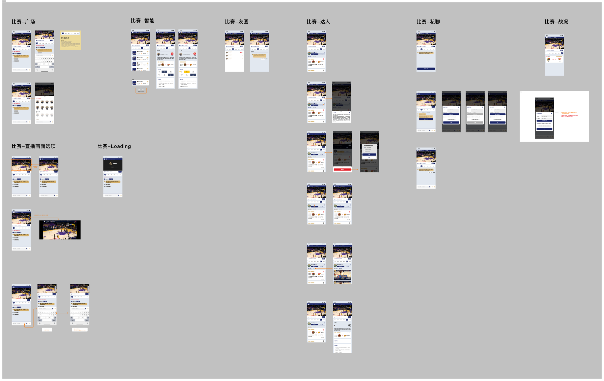
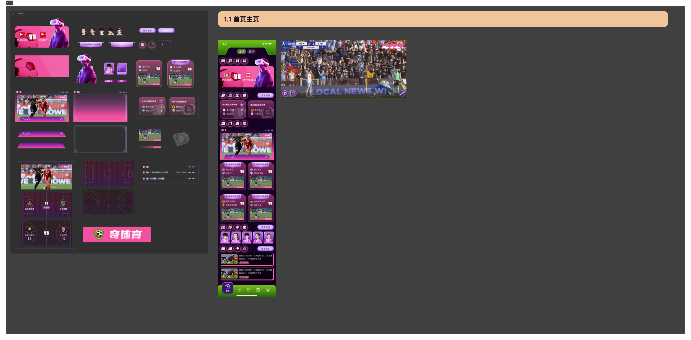
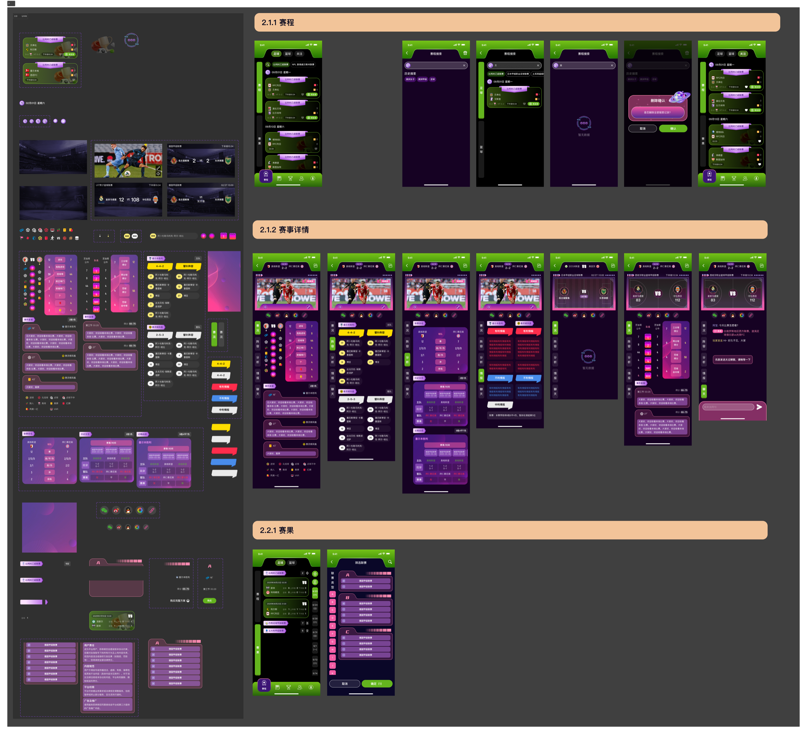
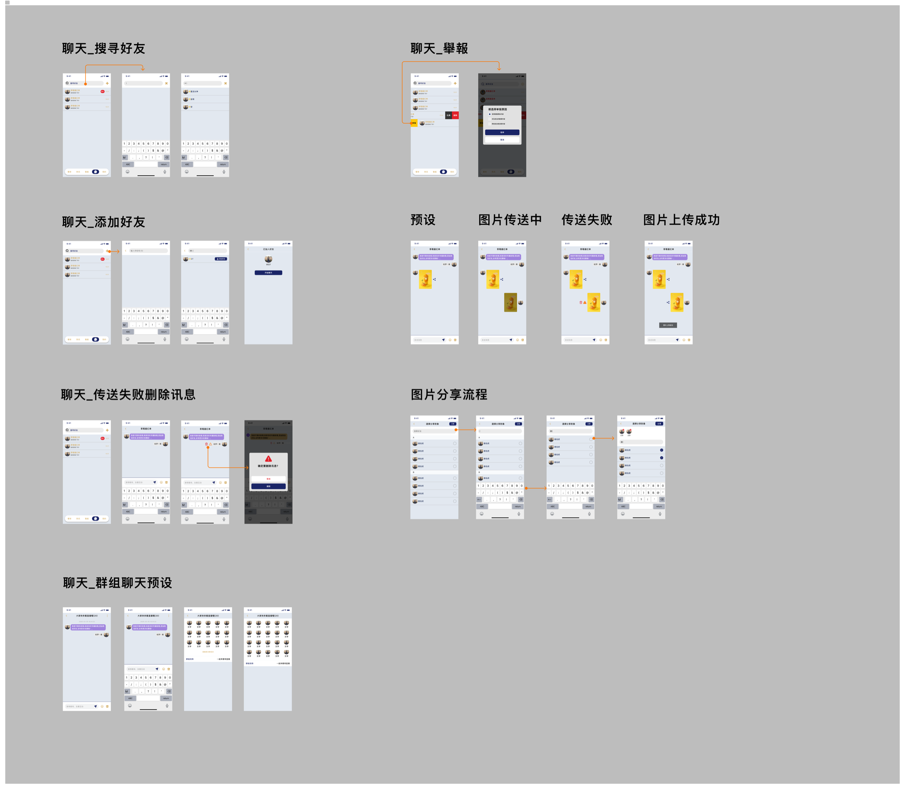
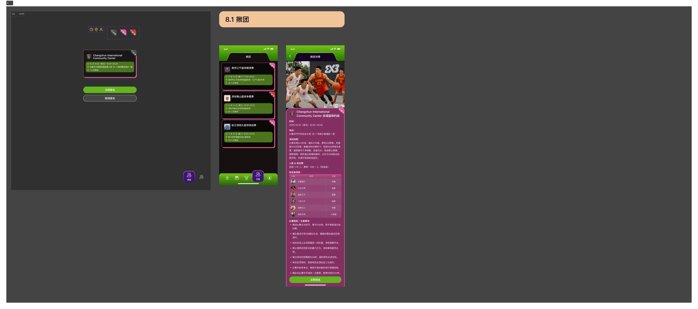
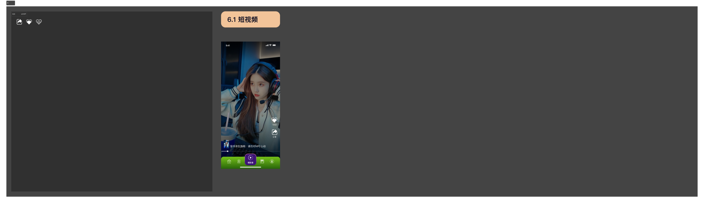
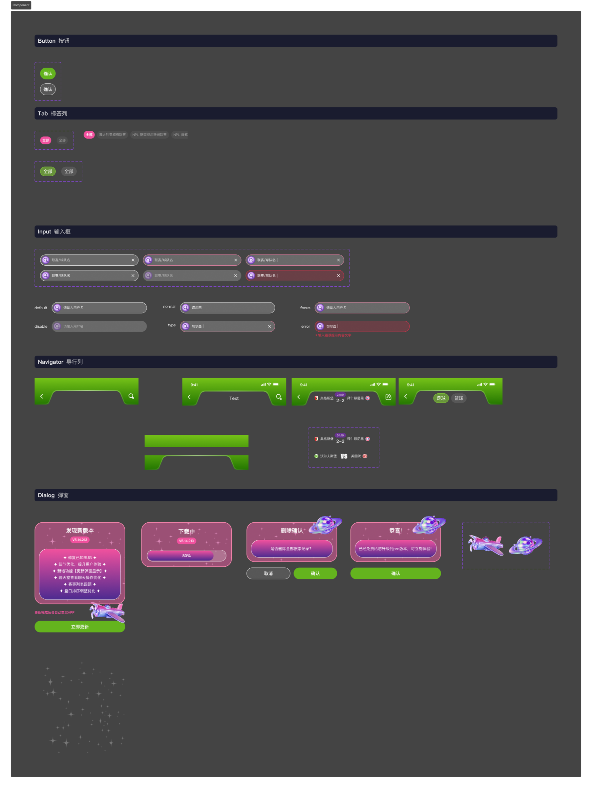
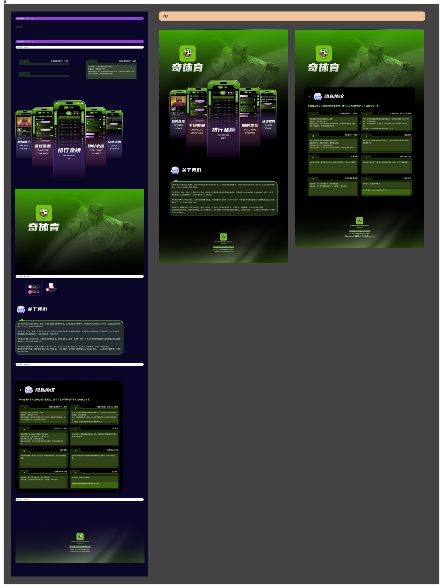